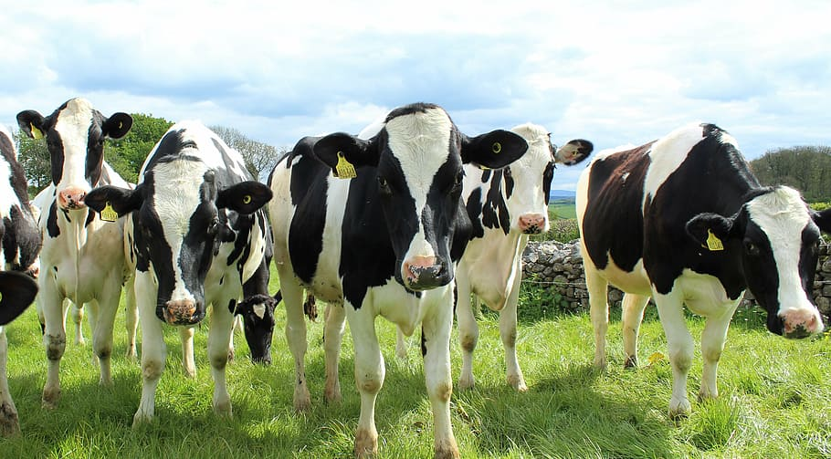

ANIMAL HUSBANDRY
DAIRY FARMING

Dairy farming is a class of agriculture for long-term production of milk, which is processed (either on the farm or at a dairy plant, either of which may be called a dairy) for eventual sale of a dairy product.
Although any mammal can produce milk, commercial dairy farms are typically one-species enterprises. In developed countries, dairy farms typically consist of high producing dairy cows. Other species used in commercial dairy farming include goats, sheep, water buffaloes, and camels. In Italy, donkey dairies are growing in popularity to produce an alternative milk source for human infants.